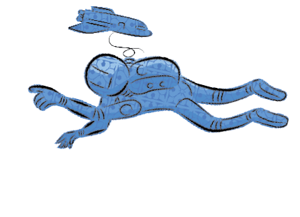
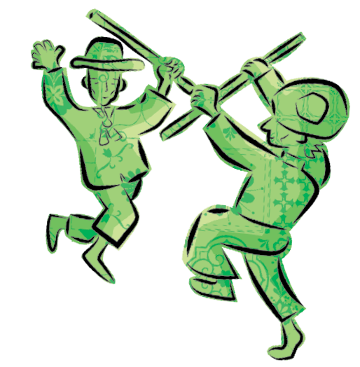

MÓDULO 2 | Design, cidades e patrimônio
Para começar, reflita sobre o que o cantor Ednardo quer nos dizer com seus versos acima em “Longarinas”, música do álbum Berro (1976)? Pense bem antes de começar essa leitura.
Pois bem, a “noiva do sol” cantada por Ednardo é a cidade de Fortaleza, capital do Ceará, a cidade natal do músico e compositor. Mas o castelo não é necessariamente um bem arquitetônico. Pode ser uma metáfora para tratar dos afetos, aqueles que todos nós carregamos na memória, com a passagem do tempo.
Na realidade, todos nós estabelecemos relações com as coisas que nos cercam. Elas podem nos trazer boas lembranças, como o primeiro brinquedo, a casa dos avós, a capelinha com seu belo altar. Memórias de coisas intangíveis, como o cheiro do baião de dois na panela ou a animação das festas de São João. Lembranças que hoje podem soar engraçadas, como o medo do teatro de bonecos ou de palhaços na mais tenra infância.
E você? Lembra-se de objetos, sons, gostos e/ou de cheiros que possuem alguma importância simbólica/afetiva na sua vida? Todas as lembranças, boas ou más, materiais ou imateriais, nos trazem para a discussão iniciada no primeiro módulo de nosso curso: afinal, o que é o patrimônio?
O francês Hugues de Varine Bohan fez uma análise bem abrangente acerca do patrimônio. Segundo ele, três categorias o definem: os elementos pertencentes ao meio ambiente, que tornam o local viável para habitar; os saberes e fazeres das comunidades que habitam esse meio ambiente; e os objetos construídos pela mão do homem, desde uma colher até as edificações mais sofisticadas. Esses três fatores dialogam entre si e criam toda uma ambiência para a formação do patrimônio cultural, que vai muito além da “pedra e cal” ou de alguns saberes isolados, gerando transversalidades. Vamos saber um pouco mais sobre isso? Ótimos estudos.
Hugues de Varine Bohan é historiador, arqueólogo e museólogo francês, criador do conceito de ecomuseus, colocado em prática desde a década de 1971 na França e em outros lugares do mundo, como o Brasil.
Um ecomuseu é formado quando membros de uma comunidade se reúnem e se tornam atores protagonistas do processo de preservação do seu patrimônio cultural (material, imaterial, natural), podendo ser assessorados por especialistas como museólogos, historiadores etc.
No filme 2001, uma odisséia no espaço, do cineasta inglês Stanley Kubrick, existe uma cena antológica. Um grupo de homens primitivos se degladiam. Um deles golpeia um inimigo e, para simbolizar a sua vitória, joga sua “arma” (um osso) no ar. No mesmo instante, corta-se a cena e surge uma espaçonave.
Esta cena revela, em poucos minutos, a velocidade da transformação dos artefatos, indo de uma forma “primitiva” de arma até chegar a uma espaçonave ultratecnológica. Esse é um exemplo de como o design das coisas surge de uma necessidade e esta pode se transformar, com o tempo, em algo mais complexo.
Mas o que é design? Até hoje não se conseguiu uma tradução literal para esta palavra inglesa, pois apesar de ser entendida como “desenho”, tem muitas facetas, dependendo que quem utiliza as suas funções. Nesse sentido, as considerações da dupla de suecos Lowgren e Stolterman é bem instigante:
"Em nosso cotidiano, com frequência lidamos com diversos artefatos, que são produtos artificiais, fruto da inteligência e do trabalho humano, construídos com determinado propósito em mente. São artefatos, por exemplo, um copo, um pente, uma casa, um carro. Um artefato não surge espontaneamente da natureza. Alguém decide sua função, forma, estrutura, qualidade e o constrói com seu trabalho (LOWGREN; STOLTERMAN apud Barbosa, 2011, p.115)"
O design tem vários segmentos. Pode ser gráfico, digital, cênico e de interiores. Ainda vão ser inventados outros tipos, dependendo das nossas necessidades.
Em nosso dia a dia, compartilhamos vários tipos de objetos criados a partir de papéis e pranchetas, e parece dependendermos bastante deles, como copos, pratos, talheres, celulares, automóveis e computadores. Você imagina a sua vida sem isso tudo?
No Brasil, temos vários designers famosos. Mas aqui vamos focar em dois profissionais, em virtude da ligação do seu trabalho com a construção do chamado patrimônio cultural brasileiro. São eles: Lina Bo Bardi, arquiteta e designer italiana, radicada no Brasil; e o pernambucano Aloísio Magalhães. O que os une aqui é a busca de um design nacional, levando em conta toda a história dos objetos populares, produzidos a partir dos saberes e fazeres tradicionais de várias regiões do Brasil.
No início da chamada arquitetura moderna brasileira, capitaneada por Lúcio Costa e Oscar Niemeyer, o design brasileiro seguia uma vertente alemã da mais famosa Escola de Design já conhecida: a Bauhaus. Lina e Aloísio quebraram este elo ao unir o tradicional e o moderno em um novo desenho para os artefatos que viriam a produzir no país. Ela com seu mobiliário baseado nas peças de artesanato brasileiro e ele como presidente do Iphan (Instituto do Patrimônio Histórico e Artístico Nacional), valorizando a tradição do trabalho artesanal como herança importante da cultura brasileira.
A Staatliches Bauhaus é considerada a primeira escola de design no mundo. Surgiu na cidade de Weimar, Alemanha, preocupada com as chamadas artes aplicadas, sobretudo as artes plásticas, a arquitetura e o design. Foi fundada em 1919, pelo arquiteto alemão Walter Gropius (1883-1969), oferecendo também cursos de teatro, dança e fotografia. O termo Sttatliches Bauhaus, cunhado por Gropius, significa “casa de construção”.
Os dois arquitetos valorizavam o trabalho popular e vernacular, porém evoluindo para as tecnologias que o movimento moderno já trazia, principalmente com a tecnologia de ponta da produção industrial em série.
Lina Bo Bardi ficou conhecida pelo uso de madeiras nacionais e tecidos populares como a chita em suas peças de design, descoberta em suas viagens pelo Brasil, principalmente em suas andanças por Salvador, na Ladeira da Misericórdia e no Solar do Unhão. Dois exemplos de móveis projetados por ela, dentro de sua tese de criar um design com feições nacionais, são a “cadeira de compensado e chita” e a sua “poltrona preguiçosa” com estrutura em cedro e encosto de sisal.
O trabalho de Aloísio Magalhães como designer gráfico é reconhecido mundialmente. Algumas de suas marcas são inesquecíveis, como a da Petrobras (1970) e a do Correios e Telégrafos (1971).
No entanto, foi no seu trabalho como coordenador do Centro Nacional de Referência Cultural (1975) e posteriormente como presidente do Iphan (1979) que consagrou Magalhães ao consolidar uma política de valorização e fomento do Design Nacional, baseado em tecnologias patrimoniais brasileiras, que ele carinhosamente chamava de “prototecnologias”.
Os estudos e ensinamentos desses dois grandes designers criaram vertentes para outros profissionais buscarem ideias, tendo como referência o nosso rico patrimônio cultural, como os irmãos Campana, que absorvendo os artefatos feitos pelo mestre Espedito Seleiro criaram a série “Cangaço” de poltronas e cadeiras.
Fernando e Humberto Campana são dois irmãos com a mesma profissão: designers. Eles conheceram o mestre de cultura Espedito Seleiro (80 anos), artesão de sandálias e bolsas de couro, morador de Nova Olinda/CE, cujo trabalho é reconhecido oficialmente pela Secretaria da Cultura do Ceará como Tesouro Vivo e pelo Ministério da Cultura, que lhe outorgou a Ordem do Mérito Cultural, em 2011.
Busque “Espedito Seleiro” na internet e veja quanta informação bacana aparece!
Achillina Bo Bardi nasceu em Roma, Itália, em 1914. Casou com o crítico e historiador de arte Pietro Maria Bardi. Projetou duas edificações que se tornaram ícones arquitetônicos no Brasil, como o Sesc Pompeia (São Paulo) e a sede do Masp (Museu de Arte de São Paulo). Em 1962, idealizou a Escola de Desenho Industrial e Artesanato, que infelizmente ficou somente no papel.
Aloísio Magalhães nasceu em Recife, Pernambuco, em 1927. No ano de 1960, após viagens pela Europa, abriu o escritório mais importante de design da sua época. Entre seus clientes mais importantes estavam a Caixa Econômica, o Banco Itaú, o Metrô de São Paulo, a Petrobras, entre outros. Foi um dos fundadores da Escola Superior de Desenho Industrial, onde lecionou por muito tempo. Em 1979, presidiu o Iphan, com uma gestão voltada para a valorização da produção cultural imaterial brasileira.
Na Itália, em meados dos anos 1960, o arquiteto italiano Aldo Rossi escreveu um livro que mudou o pensamento sobre o que é uma cidade no sentido simbólico e dos afetos coletivos.
A cidade moderna começou a ser criticada, principalmente por adotar um “estilo internacional”, que produzia e repetia prédios anódinos em todas as cidades pelo mundo, sem referências vernaculares com as localidades onde eram implantados.
Com Arquitetura da Cidade, Rossi afirmava categoricamente que os espaços urbanos não podem ficar destituídos de sua história e de seus símbolos principais, que ele chama de monumentos. Ele traça também as relações sociais entre as pessoas, a geometria das edificações e outros elementos: “A cidade é a memória coletiva dos povos; e como a memória está ligada a fatos e a lugares. A cidade é o ‘locus’ da memória coletiva.” (ROSSI, 1995, p. 198).
Desta forma, a cidade moderna começava a ser criticada pela falta de elementos simbólicos, principalmente ligados aos bens materiais preservados, que não sustentavam simplesmente a cultura de “pedra e cal”, mas também afetos e memórias.
Ainda na década de 1960, foi elaborada uma carta patrimonial muito importante: a “Carta de Veneza”. Seu conteúdo é inovador pela forma como os bens tombados são tratados. Eles não eram mais vistos de forma isolada, mas dentro de seu contexto, considerando o seu entorno.
A proposta era a de que as intervenções com técnicas modernas deveriam preservar a história da edificação, mesmo que seus seus usos não fossem os mesmos da época de sua origem, modificando-se com o passar o tempo. O importante seria requalificar o bem para a fruição coletiva.
O verso “Bela é uma cidade velha”, que inicia esse tópico, retrata bem esse sentimento nutrido pelo patrimônio, no qual as pessoas se identificam com os bens tangíveis e os intangíveis de forma a perpetuar a história das cidades.
Esse é o segredo: criar uma relação sustentável entre as cidades e seu patrimônio, seja ele material ou imaterial.
E como o design entra nessa relação? Nos artefatos que dão vida aos novos objetos e na manutenção dos usos pioneiros dos bens preservados.
Sempre é bem-vinda a relação do imaterial sendo abrigado pelo material. O design trazendo a contemporaneidade aos objetos que podemos ver no mobiliário urbano da cidade, como abrigos de ônibus, bancos, lixeiras, placas de sinalização, lanchonetes ou mesmo ateliês de tatuagem.
Você já visitou museus, memoriais ou exposições? Como são os objetos contemporâneos que se encontram no interior destas edificações? Como é a acessibilidade? É importante perceber que técnicas modernas precisam entrar em equilibrio com edificações tombadas para que não fiquem descaracterizadas.
Daí a expertise de arquitetos para projetar situações nas quais os objetos agreguem valor ao contexto histórico do bem tombado.
Imagine você saindo de casa para visitar um museu incorporado a uma edificação tombada. Imagine a quantidade de objetos que conduzem as pessoas a este destino, do ônibus aos seus assentos, até uma plataforma elevatória que faz com que pessoas com mobilidade reduzida acessem exposições, palestras ou conferências em prédios que não foram projetados com este olhar acessível.
Daí surge o termo design universal, ou seja, sem restrições, que todos possam utilizar: as crianças, adolescentes, jovens, adultos, idosos, pessoas com pouca mobilidade, baixa visão e com necessidades especiais. É a democratização dos acessos às edificações e também ao simples caminhar pelas cidades, permitindo o ir e vir sem maiores problemas.
Não podemos imaginar a utilização e fruição de nossos prédios tombados nas cidades, sem pensar nos objetos produzidos por inúmeros segmentos do design, trazendo conforto e segurança para quem os visita, desde as luzes da rua ou da iluminação cênica dos objetos expostos, dos copos com logotipos de museus, elevadores, painéis computadorizados contando a história dos bairros, das pessoas, das nossas urbes.
Para se entender o que são cidades criativas é preciso saber o que é economia criativa.Você já deve ter ouvido falar que a economia convencional trabalha com vários tipos de recursos. No caso da economia criativa, os recursos utilizados são o capital intelectual e os recursos culturais. O pioneiro neste setor é o inglês John Howkins, formado em planejamento urbano e relações internacionais, autor e precursor do conceito de economia criativa, que assim a definiu:
São atividades as quais resultam em indivíduos exercitando a sua imaginação e explorando seu valor econômico. Pode ser definida como processos que envolvam criação, produção e distribuição de produtos e serviços, usando o conhecimento, a criatividade e o capital intelectual como principais recursos produtivos (HOWKINS, 2012, p. 106).
Para termos uma ideia, segundo levantamentos da Federação das Indústrias do Rio de Janeiro (Firjan), em pesquisa de 2017, a economia criativa gerou no país 171,5 bilhões de reais e no mesmo período contou com 837 mil empregos formais.
Um dos pontos mais significativos deste segmento é que ele caminha passo a passo com a sustentabilidade ambiental, pois a indústria cultural, utilizando o capital intelectual e os recursos culturais, não é geradora de resíduos. Ela caminha também junto com o patrimônio cultural, principalmente na requalificação e recuperação dos patrimônio edificados, abrigando a produção de vários segmentos ligados ao setor.
Estes são os segmentos ligados à economia criativa, chamadas também de indústrias criativas:
A economia criativa é a base para o surgimento de cidades criativas. Utilizando criatividade, imaginação e curiosidade, cidades podem vencer suas crises, estimulando várias soluções, entre elas a geração de trabalho e renda, como também sua sustentabilidade sem desperdício de recursos naturais.
O urbanista inglês Charles Landry, primeiro teórico e precursor do termo cidade criativa, resume o conceito de forma simples: “o lugar de inspiração”.
A seguir o conceito de forma mais ampla, pelo próprio Landry: “Cidades criativas são aquelas onde há senso de conforto e familiaridade, uma boa mistura do velho com o novo, variedade e escolha e um equilíbrio entre o calmo e o vivificante ou entre o risco e a cautela”.
Imagine todos os segmentos que destacamos acima produzindo e utilizando o inesgotável capital criativo de forma sustentável, gerando emprego, trabalho e renda, requalificando espaços e revitalizando setores “esquecidos” nas cidades, principalmente os centros históricos, onde sabemos que existe uma grande infraestrutura de mobilidade e serviços diversos.
No Brasil, não é raro assistirmoa a algumas iniciativas ligadas ao conceito de economia criativa gerando cidades criativas. Bom lembrar que uma grande ferramenta para alavancar o segmento é a internet, conectando o “local” com o “global”, aumentando ainda a forma de gerar negócios com mais rapidez.
Em nosso país podemos citar algumas iniciativas geradoras de cidades criativas, como: (1) o complexo de confecções (cosewing) Malha no Rio de Janeiro; (2) o Mercado Iaô em Salvador; (3) a Travessa da Imagem, em Fortaleza. Tem algo bem interessante que une tudo isso, sabia? O design sendo abrigado por edificações que estavam arruinadas e que conseguiram uma sobrevida. Lembram quando falamos do material abrigando o imaterial?
Cidades criativas sendo estimuladas pela economia criativa são uma boa saída para redução das desigualdades formadas no tecido urbano, como também para a inclusão social, capacitando e treinando todos os atores envolvidos usando criatividade e imaginação. Nesses casos, vale a pena sonhar, pois a partir dos sonhos começam grandes responsabilidades.
O dia 30 de outubro de 2019, a cidade de Fortaleza, no Ceará, amanheceu com um título inédito. Recebeu da Organização das Nações Unidas para a Educação, a Ciência e a Cultura (Unesco) o prêmio de Cidade Criativa, na categoria “Design”, ao lado de Belo Horizonte/MG, na categoria “Gastronomia”, dois segmentos da economia criativa.
Hoje, no Brasil, além de Fortaleza e Belo Horizonte, temos também as seguintes cidades e suas respectivas categorias premiadas: Belém, Florianopólis e Paraty (Gastronomia); Brasília e Curitiba (Design); João Pessoa (Artesanato e Artes Folclóricas); Salvador (Música); e Santos (Cinema).
A rede formada pela Unesco, com essas e outras cidades criativas pelo mundo, tem como objetivo “promover a cooperação internacional entre localidades com potencial de usar a criatividade como vetor estratégico para impulsionar o desenvolvimento urbano sustentável” (Unesco-UCCN, 2004, p.5). Compartilhar ideias, projetos, promover intercâmbio profissional e artístico, elaborar propostas e estudos para o desenvolvimento urbano e sustentável são objetivos propostos para a Rede de Cidades Criativas Unesco. Durante 4 em 4 anos, todas elas terão que elaborar relatórios de monitoramento para que os compromissos assumidos sejam executados de forma local e global.
O Plano Fortaleza 2040 é um planejamento para a cidade de Fortaleza, com estratégias a serem implementadas em curto, médio e longo prazo (tendo como horizonte o ano 2040), contemplando os planos urbanístico, de mobilidade; de desenvolvimento econômico e social, entre outros. Curioso? Acesse: fortaleza2040.fortaleza.ce.gov.br/ site/assets/files/publications/ fortaleza2040_ planejamento_participativo_17-08-2015.pdf
Mas o que levou Fortaleza, por exemplo, a ser escolhida como uma cidade criativa? E porque na categoria Design?
Segundo Cláudia Leitão, diretora do Observatório de Governança Municipal do Instituto de Planejamento de Fortaleza (Iplanfor), foram as diretrizes do Plano Fortaleza 2040, especialmente o eixo “Cultura e Patrimônio”, que sensibilizaram os consultores da Unesco para a premiação.
Em entrevista ao O POVO (26 de fevereiro de 2018), ela afirma que o Plano Fortaleza 2040 “propõe a transformação da capital em uma Cidade Criativa, inovadora, inteligente e empreendedora, conectada com as demais cidades criativas do mundo, reconhecida pela sustentabilidade, inovação e diversidade cultural dos seus bens e serviços e pela inclusão social/produtiva da sua população.”
No Plano estão contidas várias ações para implementar segmentos ligados ao Design, como também a preservação das edificações em toda a cidade. Esse foi um planejamento amplo, construído com participação popular e construído nos conceitos da economia criativa e do desenvolvimento sustentável.
Em Fortaleza, a ideia é promover vários coletivos de artes, em todos os 120 bairros de Fortaleza, “com” e “para” sua população. No entanto, o centro da cidade foi idealizado como o vetor para onde serão direcionado todas as manifestações culturais, com um grande fórum de apresentações, gerando emprego e renda, principalmente pela construção do Distrito Criativo de Iracema, requalificando e restaurando uma série de edificações históricas que servirão de abrigo para as mais variadas manifestações ligadas às artes aplicadas e à economia criativa. Desse modo, não haverá apenas uma geração de empregos convencionais. O capital intelectual e criativo deverá gerar postos e locais de trabalho ligados aos empreendimentos modernos como coworkings, hubs e startups, todos ligados formando clusters em vários pontos, revitalizando e requalificando espaços urbanos degragadados.
“O Distrito Criativo Iracema, o primeiro de Fortaleza, compreende 2,9 quilômetros quadrados de área (Centro e Praia de Iracema), com uma população de 15.286 habitantes. Ele é composto de: 7% de sua área em Zona Especial de Interesse Social (ZEIS), que inclui as comunidades do Poço da Draga, Morro do Ouro e Graviola; 17% da Área de Zona Especial de Preservação do Patrimônio Histórico-Cultural (ZEPH); e 55% de Zona Especial de Dinamização Urbanística e Socioeconômica (ZEDUS).
Esse misto de zonas de interesse contribui para os objetivos centrais do Distrito, que busca aliar o empreendedorismo criativo, com inclusão social, inovação e sustentabilidade” (Cláudia Leitão, em artigo para O POVO: opovo.com.br/jornal/opiniao/2018/02/fortaleza-e-o-seu-primeiro-distrito-criativo.html)
BARBOSA, Simone D. J. Interação humano-computador. Recurso eletrônico. Rio de Janeiro: Elsevier, 2011
BARDI, Lina Bo. Tempos de grossura: o design no impasse. São Paulo: Instituto Lina Bo e P. M. Bardi, 1980.
CURY, Isabelle (org). Cartas Patrimoniais. 3ª ed. Rio de Janeiro: Iphan, 2004
FONSECA, Maria Cecília Londres. O patrimônio em processo: trajetória da política federal de preservação no Brasil. 2. ed. Rio de Janeiro: Editora UFRJ:MinC; Iphan, 2005
HOWKINS, John. Economia criativa. Como ganhar dinheiro com ideias criativas. São Paulo, Mbooks, 2012.
IPLANFOR (Instituto de Planejamento de Fortaleza). Fortaleza 2040. Eixo 3 - Cultura e Patrimônio. Disponível em: https://fortaleza2040.fortaleza.ce.gov.br/site/. Data de acesso: 3/1/2020
LANDRY, Charles. Origens e futuros da cidade criativa. São Paulo, SESI-SP Editora, 2013.
MAGALHÃES, Aloísio. Da invenção e do fazer. Reflexão sobre o artesanato e o homem. In: Separata da Revista Pernambucana de Desenvolvimento, v. 4, n. 1, jan./jun., 1977, p. 125-135.
PMRJ (Prefeitura Municipal do Rio de Janeiro). Design e/é patrimônio. Rio de Janeiro: Centro Carioca de Design; Prefeitura Municipal, 2012
PMF (Prefeitura Municipal de Fortaleza). Distrito Criativo da Praia de Iracema. Observatório da Cidade. Disponível em: https://prezi.com/p/-bqcy-ddirh5/apresentacao-distrito-criativo-praia-de-iracema/. Data de acesso: 3/1/2020
ROSSI, Aldo. A arquitetura da cidade. São Paulo: Martins Fontes, 1995.
UNESCO. A Rede de Cidades (Unesco Creative Cities Network – UCCN). Disponível em: http://www.unesco.org/new/pt/brasilia/about-this-office/networks/specialized-communities/specilized-communities-clt/uccn/
VARINE-BOHAN, Hugues. Patrimônio cultural. A experiencia internacional. Notas de aula, de 12/08/1974. São Paulo: Universidade de São Paulo; Faculdade de Arquitetura e Urbanismo; Instituto do Patrimonio Histórico e Artístico Nacional, 1975.
Robledo Duarte é graduado em Arquitetura e Urbanismo pela Universidade Federal do Ceará (UFC), com especialização em Gestão Ambiental. Atuou no Programa Monumenta em Icó, como coordenador de patrimônio material da Secretaria da Cultura do Estado do Ceará (Secult-CE). É arquiteto do Departamento de Arquitetura e Engenharia do Ceará, tend o como p rojetos e obras principais, os restauros do Cine-Theatro São Luiz e o Palácio da Abolição. É professor de Arquitetura da Faculdade Estácio de Sá, arquiteto do Iphan-CE e, atualmente, trabalha na Secretaria Municipal de Urbanismo e Meio Ambiente (Seuma).
Daniel Dias é ilustrador e artista gráfico, com extensa produção em projetos editoriais, sendo a maior parte destinada ao público infantil e infantojuvenil. Seu trabalho tem como base a pesquisa de materiais e estilos, envolvendo estudo de técnicas tradicionais de pintura, desenho, fotografia e colorização digital.